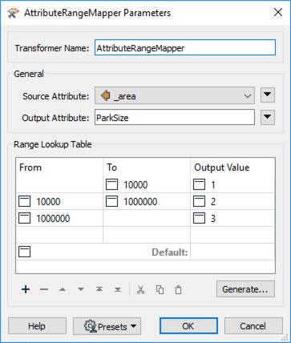
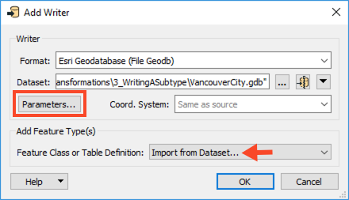
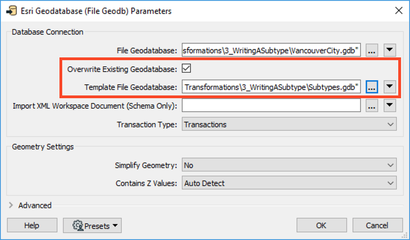
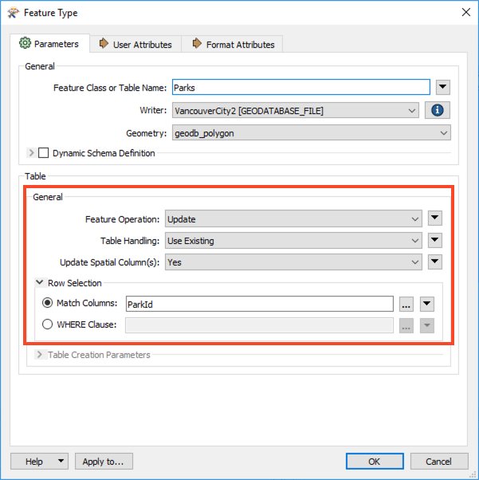
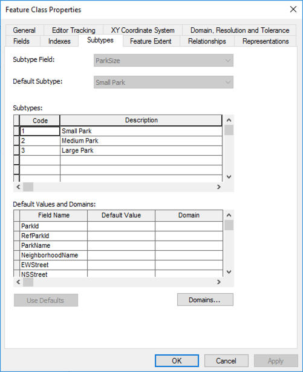

When this option is checked, FME will populate the format attribute with the descriptive value contained in the subtype definition.
After completing this unit, you’ll be able to:
This unit's exercise uses the Esri Geodatabase (File Geodb) reader/writer, which requires a licensed version of ArcGIS. For more information on required ArcGIS license levels, please see Required ArcGIS License Types for FME Geodatabase Formats.
A subtype defines aspects of a geodatabase schema that relates to data classification. In other words, instead of creating different feature classes for a set of features, a subtype functions as a way to define a subset of features within an individual geodatabase feature class. An attribute in the feature class stores integer values that define the subtype, and a subtype table contains definitions for the corresponding integer value. For instance, a table named Road may have an attribute called Condition, whose values map to a subtype containing values good, moderate, and bad.
In general, each table can have only one subtype, all codes must be unique and be valid integers, and all code:description pairs must be unique.
Note that a subtype is specific to a particular feature class. Therefore, feature classes cannot share subtypes like they can share domains.
When reading a geodatabase, FME has an option to Resolve Subtypes.
When this option is checked, FME will populate the format attribute with the descriptive value contained in the subtype definition.
Because a subtype can only apply to a single feature class, it is impossible to create a new table and associate it with an existing subtype. As such, when writing geodatabase subtypes, the workflow requirements will fall under the following scenario:
The above scenarios will be controlled primarily by the following parameters:
No additional work is required to write to an existing table with an existing subtype. It’s unnecessary to set the writer parameter Validate Features to Write to validate the subtype value. A feature with an undefined subtype value will be rejected anyway, with the following error:
For the '<ClassName>' table/feature class the subtype code of '<Value>' is not valid for the subtype field '<SubtypeName>'
Limitations
At the time of writing, FME will not allow you to associate different domains based on a particular subtype. For instance, you would not be able to set range domains of 0-50,000; 50,000-100,000; 100,000-250,000 and apply them to a subtype definition containing the values of Small, Medium, and Large. You would need to create the domain:subtype relationship in ArcGIS to achieve this.
This scenario can be accomplished using a workspace.
1. Read Source Data
In FME Workbench (2021.1 or later), open a blank workspace.
Add a MapInfo TAB (MITAB) reader to the canvas and browse to the Parks.tab dataset, which you can download from the Resources section of this unit.
Click OK to add the reader. FME will use the data in this file to calculate Park area values subject to the subtype definition in the destination geodatabase.

2. Inspect Source Data
Run the workspace and inspect the feature cache. It should look something like this:
3. Calculate Area
Next, we will calculate the area of each park polygon. Add an AreaCalculator to the canvas and connect it to the Parks reader feature type. We can accept the default parameters. an attribute named _area will store the value for the calculated area.
4. Map Calculated Values to Subtype Codes
An AttributeRangeMapper will be used to map values coming from the _area attribute (created to the subtype codes we will apply to the subtype definition). The code applied will determine whether the initial values fall into a specified range.
Add an AttributeRangeMapper to the canvas and connect it to the AreaCalculator.
Open the parameters and set the Source Attribute to _area, then change the Output Attribute to ParkSize.
For the Range Lookup Table, enter the following values:
| From | To | Output Value |
|---|---|---|
| 10000 | 1 | |
| 10000 | 1000000 | 2 |
| 1000000 | 3 |

5. Write Features & Writer to Subtype Field
Add an Esri Geodatabase (File Geodb) writer to the canvas and browse to a location to save the output geodatabase. Set the Feature Class or Table Definition to Import from Dataset, then open the Parameters.

In the Parameters, enable Overwrite Existing Geodatabase, and then set the Template File Geodatabase to Subtypes.gdb. Click OK twice to finish adding the writer.

In the Import Writer Feature Types dialog, ensure Format is set to Esri Geodatabase (File Geodb) and navigate to the template geodatabase (Subtypes.gdb), then click OK.
Since there is only one feature class in the template geodatabase, it will get added automatically. Connect the Parks writer feature type to the AttributeRangeMapper.
6. Define Table Handling to Update
We need to define how the table will be handled. Since we already have 80 features with the subtypes attached and are only adding attributes, we will need to update the incoming features instead of creating new ones. Open the Parks writer feature type parameters. In the General section, change the Feature Operation to Update, the Table Handling to Use Existing, and the Match Columns to ParkID, then click OK.

7. Save and Run the Workspace
Save and run the workspace. View the output geodatabase in ArcMap to confirm the subtypes are correct.
